DE
“NÃO FUNCIONA”
A
FERRAMENTA
DE TRABALHO.
Como escuta, dados e evolução contínua ajudaram a transformar dashboards de reporte em ferramentas utilizadas para orientar trabalho e decisões.
- BUSINESS INTELLIGENCE
- DATA
- PRODUCT THINKING
- DECISION SUPPORT
PRIMEIRO,
OUVIR.
Em julho de 2022, João Vitor assumiu os dashboards do Programa Elos dentro da Fundação Solidaridad.
Pouco tempo depois, uma viagem de São Paulo até Matão colocou o desafio em perspectiva.
Em uma conversa direta com profissionais responsáveis pelos indicadores do programa, o diagnóstico foi simples:
“Os dashboards não funcionam.”
Para muitos, poderia ser um feedback desanimador. Mas havia algo importante acontecendo: as pessoas estavam falando. E alguém estava ali para ouvir.
O primeiro desafio não era abrir o Power BI e redesenhar telas. Era entender por que aquelas ferramentas não faziam parte da rotina de quem deveria utilizá-las.
O PROBLEMA
NÃO ERA
SIMPLESMENTE
VISUAL.
ERA DE USO.
ENTENDER
ANTES DE
CONSTRUIR.
Naquele momento, parte das informações presentes nos dashboards ainda precisava ser levada para planilhas auxiliares para que as equipes conseguissem trabalhar com os indicadores.
O desafio não era simplesmente construir dashboards mais bonitos. Era fazer o BI ser útil.
- Quem utiliza essa informação?
- Que decisão precisa ser tomada?
- O que a pessoa precisa descobrir?
- O que acontece depois que ela encontra a resposta?
- ESCUTAR
- ENTENDER
- QUESTIONAR
- TRADUZIR
- CONSTRUIR
- TESTAR
- EVOLUIR
Os dashboards passaram a evoluir junto com as conversas, os processos e as necessidades de quem realmente utilizava as informações.
Construir deixou de significar apenas entregar uma tela. Passou a significar observar, testar, explicar, receber feedback e evoluir novamente.
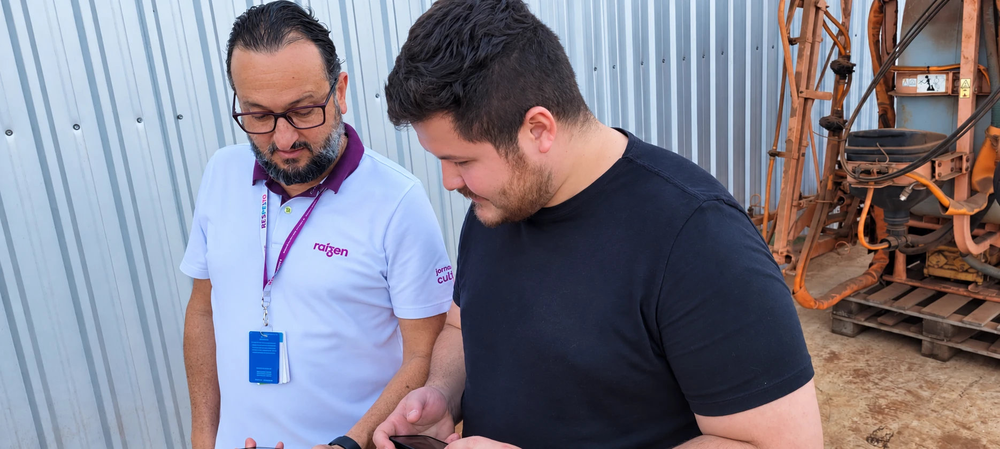
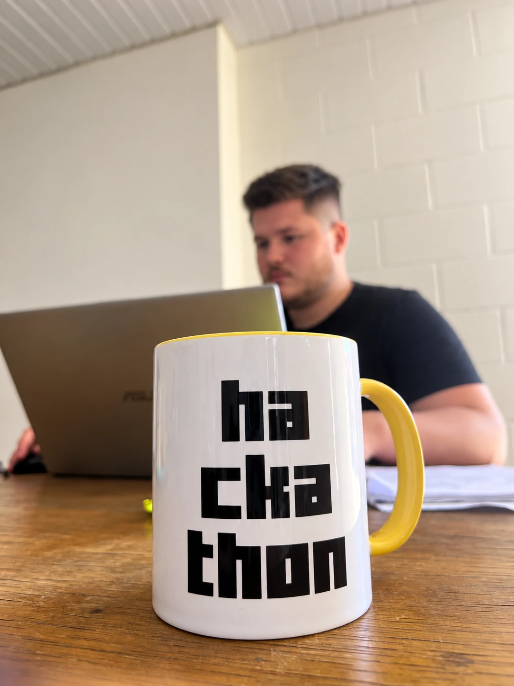
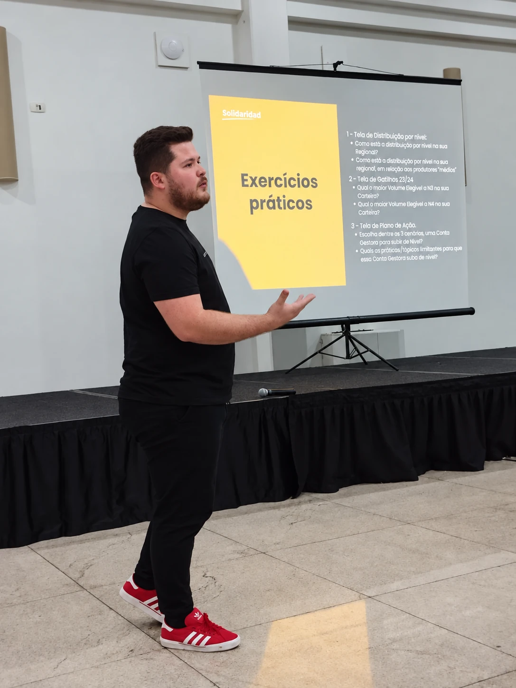
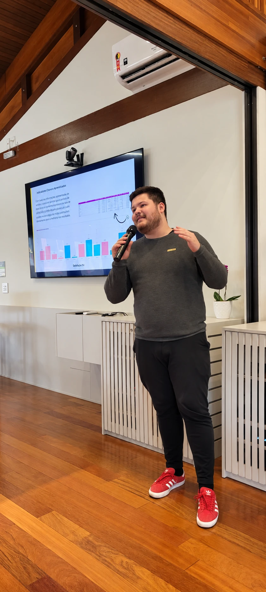
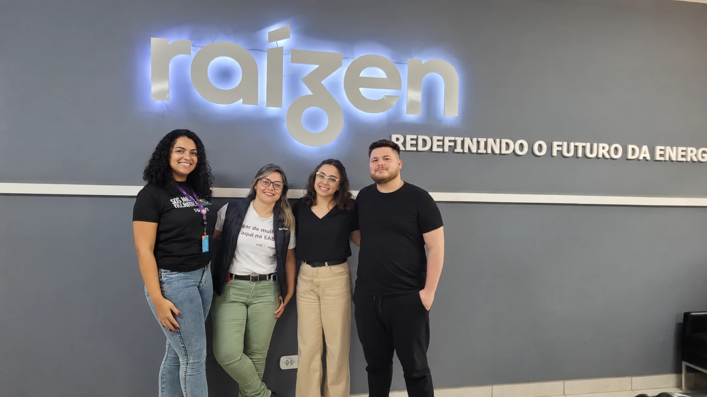
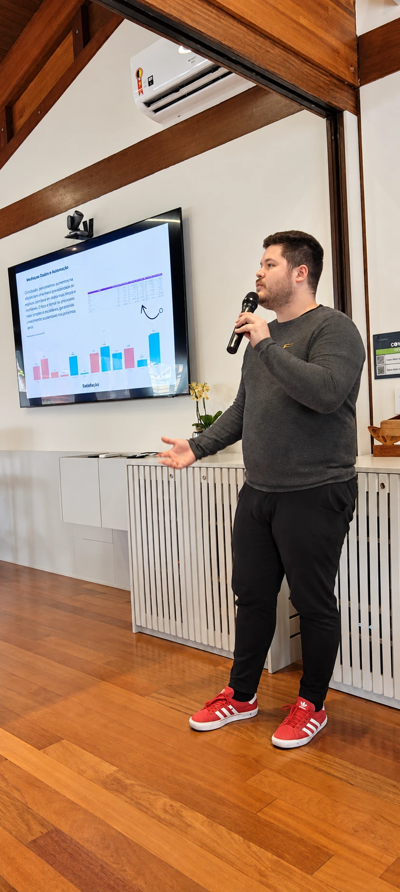
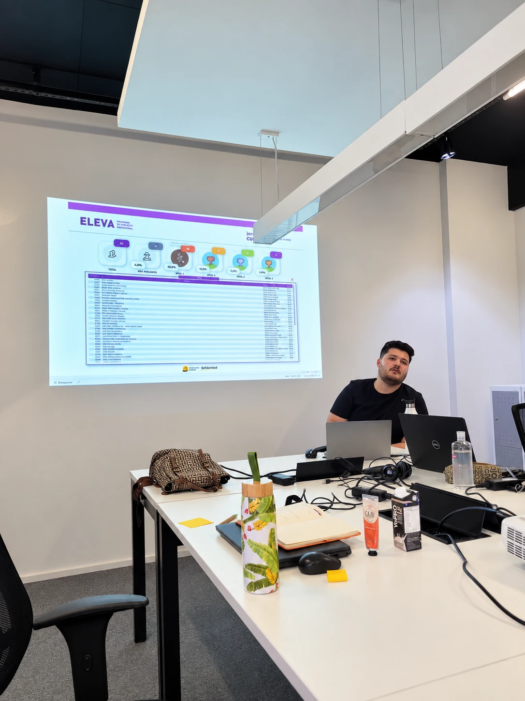
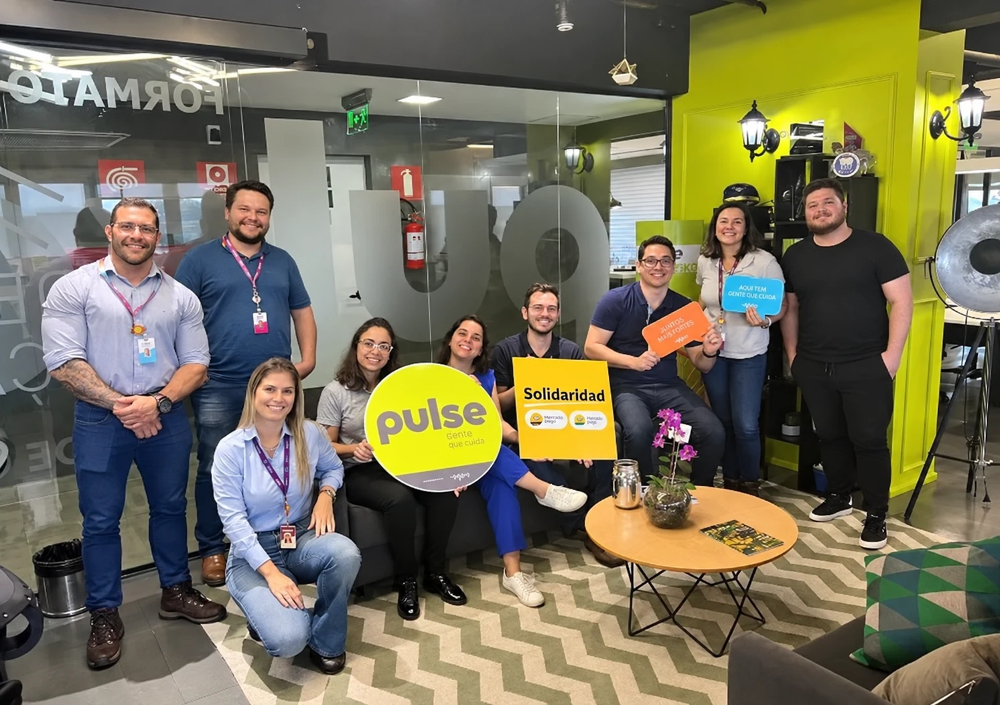
DE REPORTAR
O PASSADO
PARA ORIENTAR
O PRÓXIMO PASSO.
PRIMEIRO,
ENTENDER
O QUE ESTAVA
ACONTECENDO.
Indicadores, percentuais, volumes, níveis, regionais, polos e resultados criaram uma visão comum da operação.
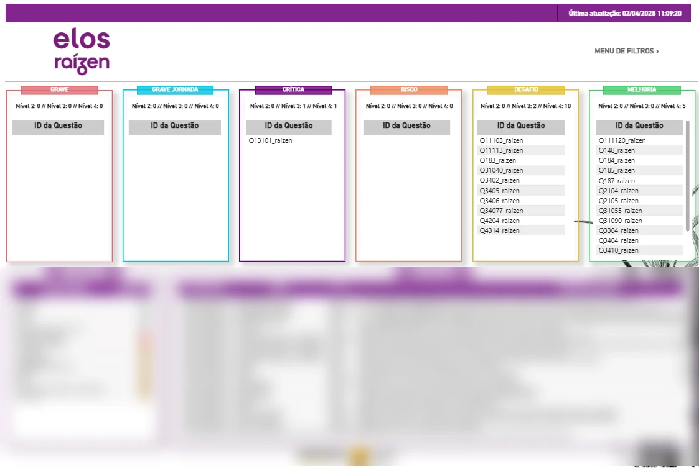
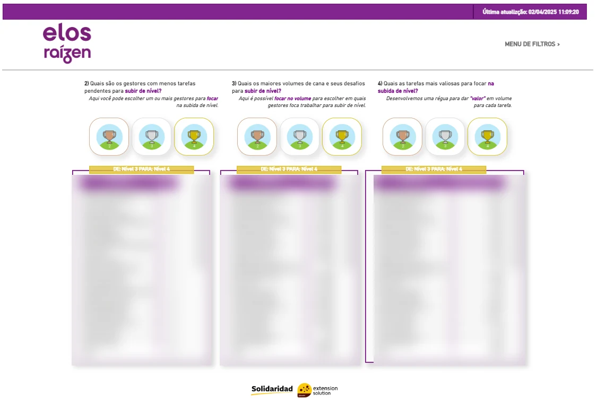
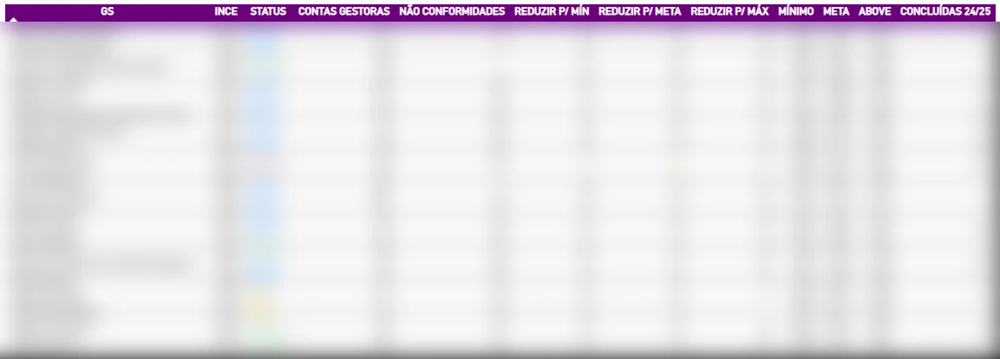
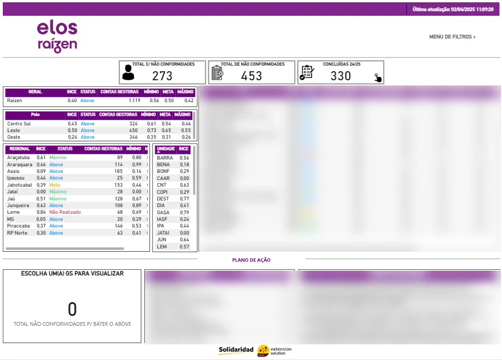
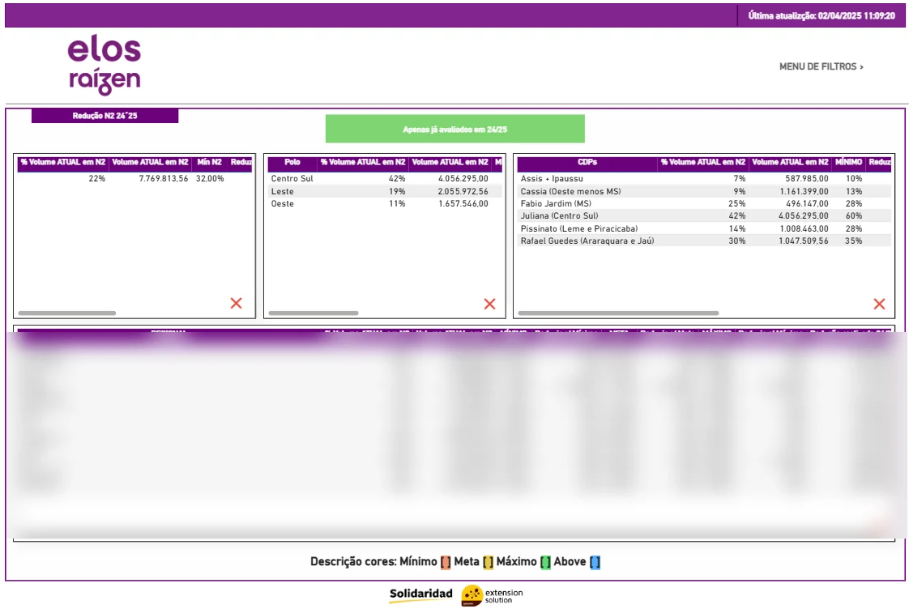
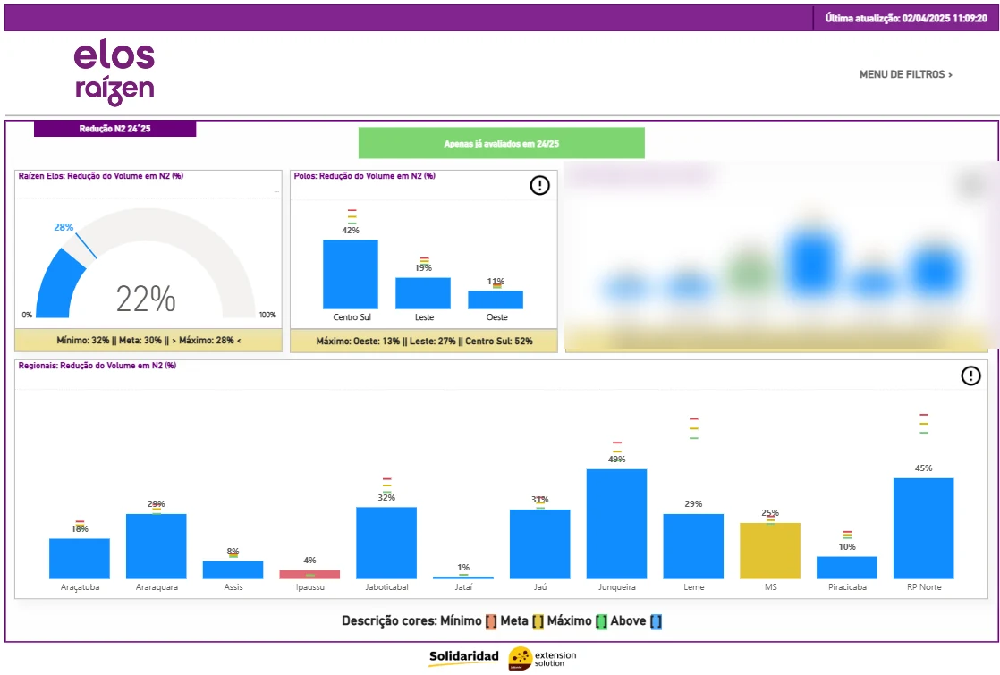
DO RESUMO
AO DETALHE.
Dados consolidados são importantes. Mas a operação frequentemente precisa chegar ao próximo nível:
E DEPOIS:
O QUE
FAZEMOS
COM ISSO?
Os dashboards passaram a ajudar não apenas a acompanhar resultados, mas também a identificar prioridades e orientar onde concentrar esforços.
DO INDICADOR
PARA A AÇÃO.
A informação deixou de terminar no indicador. O objetivo passou a ser conectar o resultado observado com o trabalho necessário para avançar.
RESULTADOS CONSTRUÍDOS PELO PROGRAMA E POR SUAS EQUIPES. COM O BI, ESSES NÚMEROS GANHARAM VISIBILIDADE E CAPACIDADE DE ACOMPANHAMENTO.
O BI não produziu esses resultados sozinho. Ele ajudou a iluminar o trabalho coletivo, monitorar milhares de planos de melhoria contínua e tornar a evolução visível para quem precisava decidir.
O MELHOR KPI
NÃO ESTAVA
NO DASHBOARD.
Ao longo dos anos, os dashboards deixaram de ser apenas painéis consultados para prestação de contas e passaram a fazer parte da rotina de trabalho.
Gestores e profissionais ligados à governança do Programa Elos passaram a utilizar o BI para encontrar prioridades, acompanhar resultados e orientar suas próximas ações.
O resultado mais importante não era simplesmente ter mais telas. Era perceber que o BI havia se tornado necessário para trabalhar.
ONDE PRECISO ATUAR?
↓QUEM PRECISA DE ATENÇÃO?
↓O QUE FALTA PARA ATINGIR A META?
↓QUAL DEVERIA SER A PRÓXIMA AÇÃO?
DE DASHBOARD
PARA
FERRAMENTA
DE TRABALHO.
UM DASHBOARD NÃO SE TORNA RELEVANTE PORQUE É BONITO.
ELE SE TORNA RELEVANTE QUANDO ALGUÉM SENTE FALTA DELE PARA TRABALHAR.
BUSINESS INTELLIGENCE
2022 — 2026
BUSINESS INTELLIGENCE / DATA / ANALYTICS